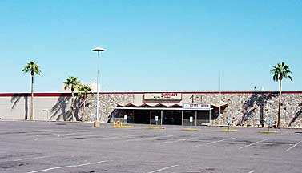

Location
System M was installed in the Honeywell Phoenix Multics Development Center (PMDC) in Phoenix, AZ in 1972 to support Multics when it became a product.
Initially, System M was located in the Camelback Road Facility (CRF) at Camelback Road & Black Canyon Freeway.
In 1987, System M moved to Deer Valley Computer Park (DVCP) at Thunderbird Road & Black Canyon Freeway.
First Installed
A prototype 6090 system was installed at CRF in 11/72. In 1973 the official name of "6180" was announced.
Configuration: (1978)
Four 6180 CPUs,
1024K words MOS memory,
2 4 MW paging devices,
xx MSU0451 disk (150 MB each),
eight tape drives,
printer,
card reader & punch.
.. plus other equipment for System MB, including a GCOS system that ran CUESTA (see below).
Application areas
This system was run by the Multics Computer Center (MCC) organization and supported timesharing access for
- Multics developers in Phoenix
- Site Analysts and other Multics team members world wide
- General Honeywell application use
- Marketing use, including Multics demos and benchmarks
New versions of system software were exposed on System M after they had been checked out at CISL and MIT. The System M machine was also used for final packaging and tape generation for MR releases.
System MB was the part of System M that was used for benchmark support. CPUs and other resources could be switched from one machine to the other, allowing benchmark development while service was running, and then making a big configuration for actual benchmark runs.
Site Analysts and System Administrators
The Phoenix Multics development group played a major role in supporting System M, since it was an internal development site. Frank Martinson managed the group that kept System M going.
Lacy Johnson was the main system administrator.
Operations
The people who ran System M included Conrad Barriga, Gerald Cahoon, Willie Drumm, Kay Kaiser, and Harold Van Sant.
Field Engineering
Jim Combs.
Notable developments
MRDS, the first commercial relational database product, was developed at System M by Jim Weeldreyer and Oris Friesen.
Final Shutdown
November 1993
Anecdotes
[PWB] CUESTA was the load generation software. It ran on a GCOS 3 machine at Camelback. I worked for Honeywell FSO (Federal Systems Operations) in the 77-79 timeframe doing GCOS and later Multics benchmarks, the most significant of which was the EOP (Executive Office of the President) benchmark. The EOP benchmark had a lot of word processing in it. I entered a TR about compose performance. A response from the developer of compose, Ed Wallman, likened using compose to do the tasks in the benchmark to using a 747 to retrace the first flight of the Wright Brothers. A followup mail from Ed's manager, Tom Van Vleck, suggested that a simple fill and adjust routine be written to do the job. I still have a copy of that email. One night on System MB (the benchmark system) I wrote that simple routine, and using it reduced the configuration that we ultimately bid by an entire CPU. A few months later I joined Multics development and one of my first tasks was to make that fill and adjust routine a product. It (format_document) was never widely used, but its subroutine interface (format_document_) was used by several Multics subsystems including the mail system and forum.
[PWB] The RPV of the last instance of System-M was taken apart, its platters engraved and given as mementoes to the remaining Phoenix Multicians at (by then) Bull. I have one in my garage.
[PWB] The CRF building has reverted to its original retail origins and is now "In-Door Swap Mart".


The former CRF building, with the Indoor Swap Mart sign on it. Photo by Anthony Nemmer, Sept 2003. Click for a larger view.
Written 09/20/95
Updated 07/08/99
Updated 12/15/02
Updated 10/31/12
Updated 12/07/16
10/24/19 Moved some content to Multics in Phoenix